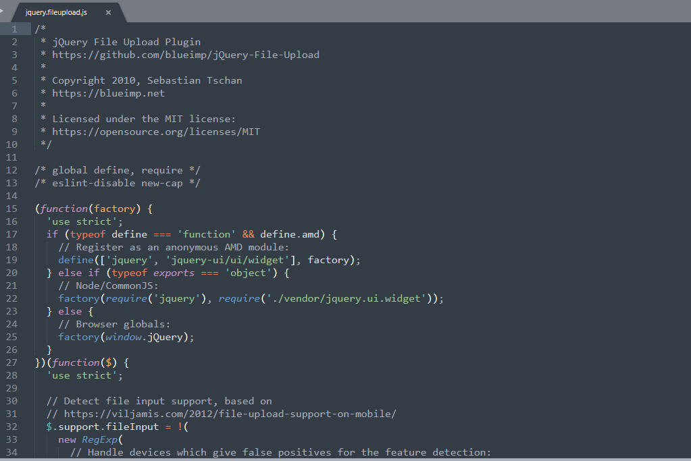
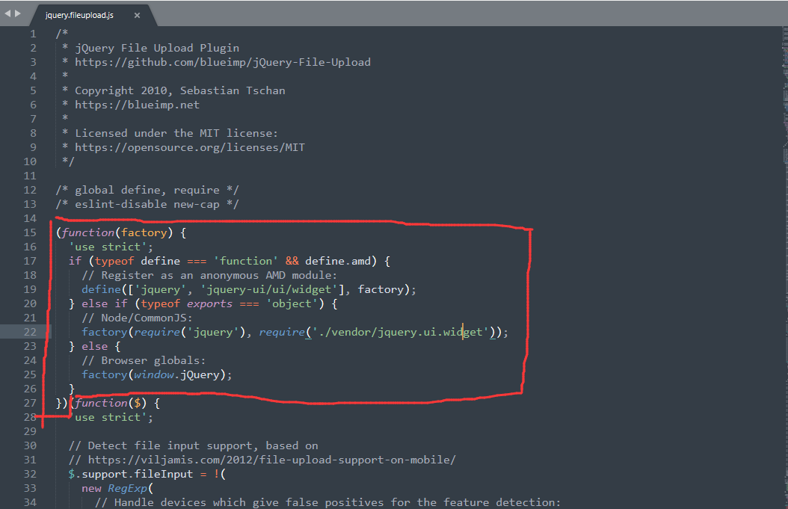
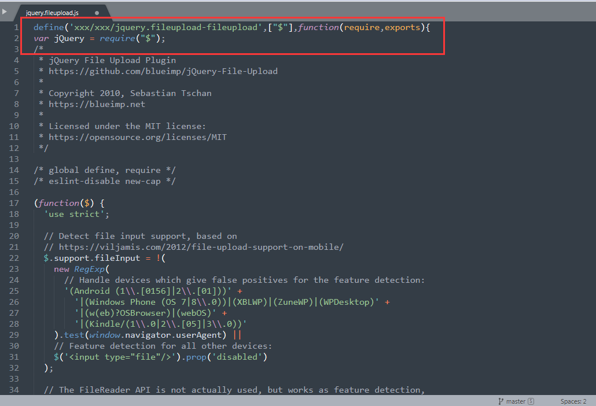
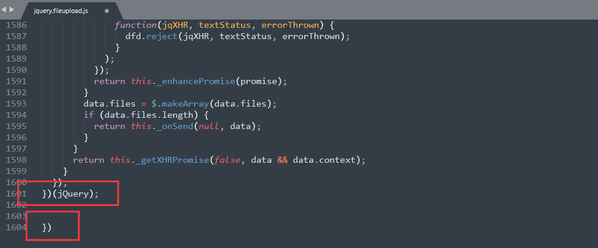

jQuery file upload踩坑记录
文章目录
前言
不得不说jQuery file upload插件文档有点杂乱，API是挺全的，但是也没有明确哪些API兼不兼容IE，再加上还不熟悉之前flash写的业务代码，头疼。
作为一个未毕业、0基础刚入门的前端切图仔，采坑是不可避免的，从小老师教导：‘’好记性不及烂笔头记‘’，那么记之以砥砺前行。
正文
采坑记录
1.jQuery File Upload的使用
引入：
1 | <script src="../js/lib/jquery/1.9.1/jquery.min.js"></script>//最好1.8版本向上 |
上传的主要文件是前四个，如果需要验证和进度条功能则需要引入最后两个文件。
Ps：顺序最好不要乱，有依赖关系！
代码：
1 | $('#fileupload').fileupload({ |
以上是初始化内容，具体API 查看Github：https://github.com/blueimp/jQuery-File-Upload/wiki/Options
2.Seajs改造
原：

由于代码中只支持AMD规范，而Seajs是CMD规范，故将其改造。

将上图中的代码删除，并添加
1 | define（" "，function(require,exports){ |


3.jQuery File Upload上传插件在第一次选择文件后进行取消操作，第二次选择文件后进行上传操作，会将第一次选择的图片也上传
大致原因是click事件的绑定，每次触发add回调时，click事件handler都会进行绑定。
因此，在第一次add时，handler被绑定到input:file上。
第二次add，再次绑定handler，这次针对的是第二个文件。
所以，这两个文件都被绑定在了input:file上，并在第二次点击上传按钮时进行提交。所以在绑定click事件处理程序之前，向按钮添加unbind解决这个问题。
参考：（解决来源）问题大同小异：(https://stackoverflow.com/questions/53812048/jquery-file-upload-plugin-uploads-the-first-image-again-on-uploading-the-second)
4. 验证文件类型、大小失败
具体原因未知，但是有一种麻烦的解决办法，就是手写验证，emmm…，那 jquery-fileupload-validate 要你何用？
参考：（解决来源） https://stackoverflow.com/questions/15549094/jquery-file-upload-plugin-how-to-validate-files-on-add